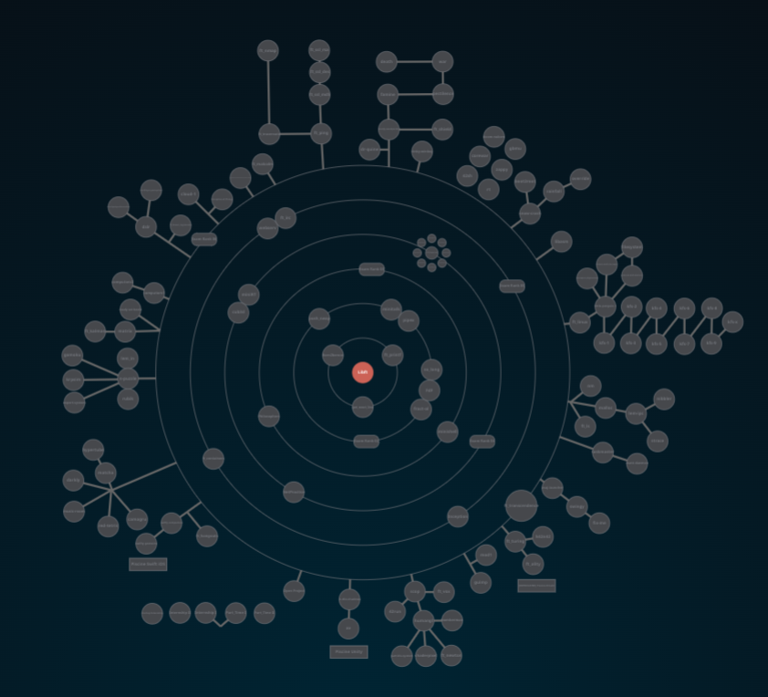
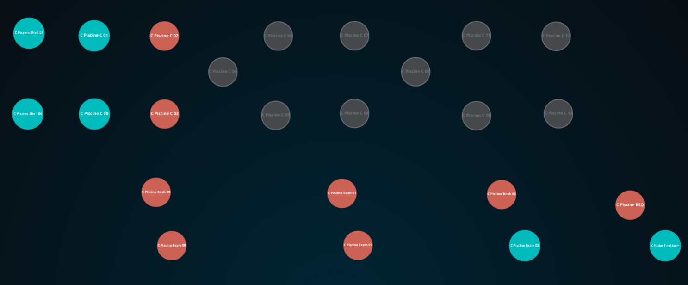
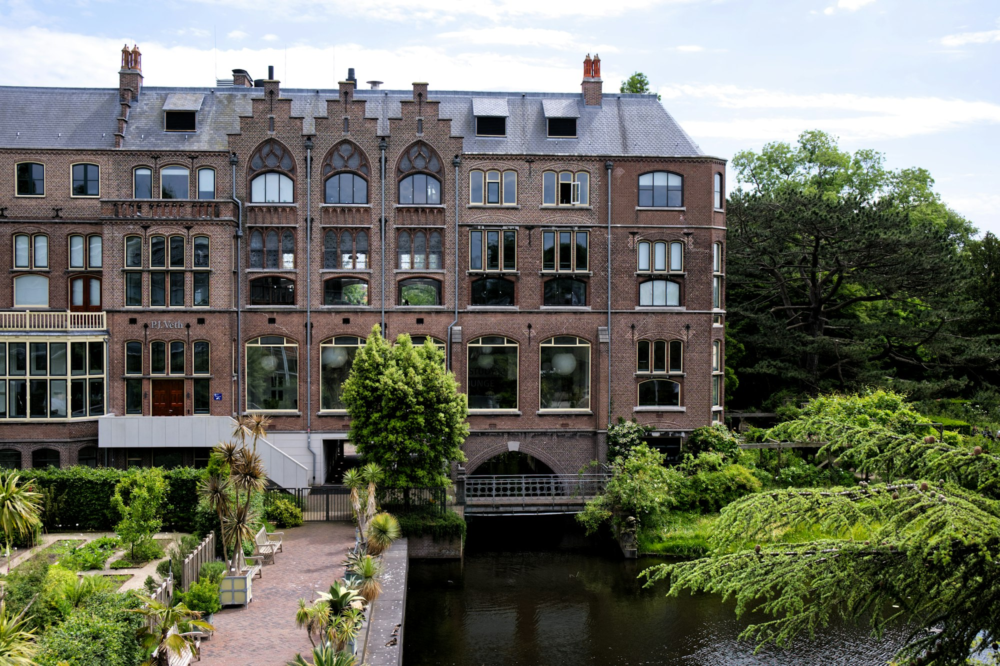
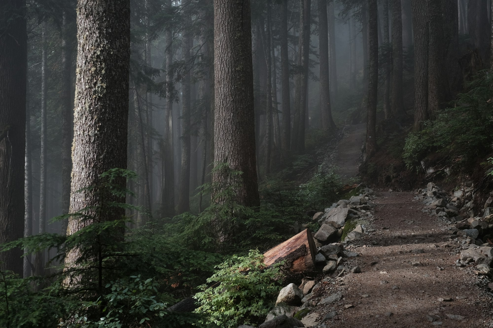
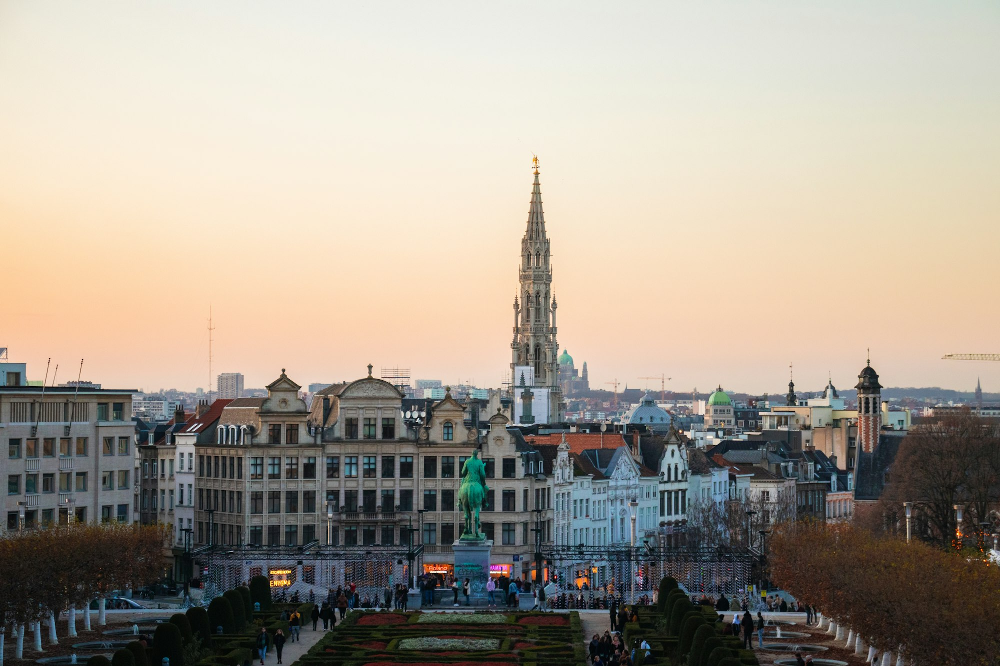
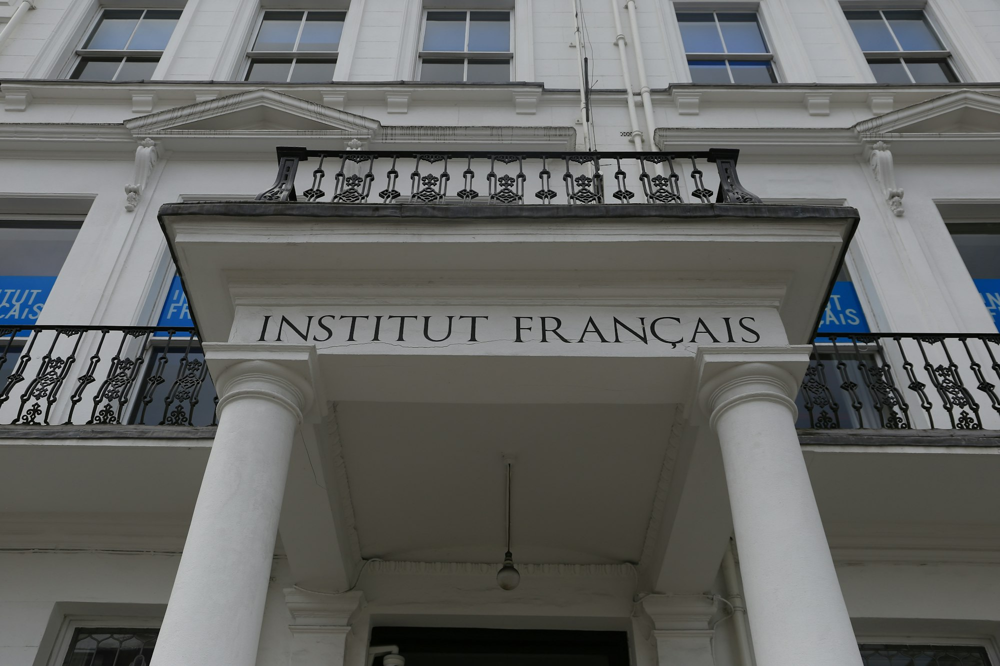

My double 42 Piscine experience: The difference between 19 in Brussels and Codam in Amsterdam

In September of this year (2022) I did a selection month ('Piscine') at 19 in Brussels. This was my second Piscine, as I have done one before in the autumn of 2020, at Codam in Amsterdam. Both are schools in the 42 network.
What is '42' and what is the 'Piscine'?
42 is the name of global network of privately funded coding schools, usually by high-worth individuals from the Tech Industry. Their goal is simple: reduce the global shortage of programmers and software engineers, by offering free, modern and cost-efficient education to anyone dedicated to finish their curriculum.
The Piscine (French for swimming pool) is a month long preview of their type of education and the first check for whether the contestant's has the dedication to make it to the end of the curriculum. Regardless of their history or (educational) background, anyone who can pass the Piscine will be accepted to the school.
How the selection precisely works and what the criteria are, remains a secret. When you participate in the Piscine, you agree to keep its contents secret and not to share the questions asked with anyone outside 42.
How the Piscine works
To understand how a Piscine at 42 works, we need to understand how the 42 educational system is different from traditional colleges and universities.
No teachers, no classes, no books
When you start at 42 you are presented with all the projects you have to complete to finish the curriculum. They are shown in their internal system in a big graph that looks a bit like this:

For every project, you read the subject to understand what kind of program you have to make. (For example: "Write a program that reads the next line of a text file".) There is little to no learning material available, so you'll often have to resort to the internet to get answers to your questions. Or, even better, you ask one of your fellow students for help. After all, you are all there to do the achieve the same, so you can share the knowledge you built up with others and vice versa, which will strengthen your learning.
Once you have written your program and are sure that it works, you will request to be graded by some of your fellow students in a so called 'evaluation' and optionally by a central computer that checks if your program works as it should.
It will often happen that you fail at the grading process. And that is actually exactly the point. Because it allows you to learn from your mistakes for the next grading attempt, and the next one... and so on, until you passed the subject.
Passing a project unlocks other more advanced projects, until you have completed them all.
Exams and internships
Most projects are subjects describing what program you need to make. There are two other kinds of projects.
The first is an exam project, which you can take every once in a while. It requires you to reproduce some of the projects you already finished, but under surveillance, within a time-frame of a few hours and without an internet connection.
The second is an internship, but that's not relevant for the Piscine.
The Piscine is a preview of the 42 curriculum
The normal curriculum will take you 1,5 - 3 years to complete (dependent of your own tempo). The Piscine is a more intense month-long mini-version that prepares you for the curriculum.
It also has a graph with all the projects in it, but they are smaller, meaning you will do more evaluations. It also has one group project per week as well as an exam.

The Piscine serves multiple purposes.
The first and most important one is that it tests you. By the results of your Piscine the staff of your 42 school judge whether you can make to the end of the curriculum. If you can do the Piscine, you can do the curriculum, because the Piscine shows if this educational system works for you and generally it is more intense that the rest of the program.
Another important purpose is that the Piscine is an introduction to the concept of programming. It is much like a beginner's programming boot-camp for the C language. You will learn how to write simple programs in this language, which helps you understand all other programming languages. You will need this knowledge about C for many other projects in the rest of the curriculum.
Why I did two Piscines instead of one
Before diving into them, I would like to explain why I did two Piscines in the first place, as you only need to pass one Piscine in order to enter 42.
My Piscine at Codam and after
I had no clue what I wanted to do after my baccalaureate until I heard about Codam and wanted to give it a try, because I didn't hate computers much and programming seemed like a useful skill for once I figure out whatever I want to do.

Codam was the first 42 school I heard about and it made sense to go there instead of somewhere else, because it was only one hour and a bit far from where I lived. I started their application program in the winter of 2020 and managed to get a spot in the third Piscine of that year (Codam was already getting popular), which was in August.
I passed the Piscine and I quit Codam after half a year. The were several factors that led to this.
Because of the COVID-19 measures in the Netherlands at that time, Codam decided to physically close the building and I had to study from home, eliminating a fundamental part of the 42 for me, that is the interaction with fellow students. I made slow progress and I got frustrated by this and undermined my self-esteem.
I rationalized this insecurity as "I guess I don't want to be a programmer anyway. I resolved the mystery around programming and kind of understand the fundamentals now. I can use this knowledge later, but for now I want to orientate myself more broadly".
Then, a Codam staff member also threatened to cut the financial assistance I received to help cover my living expenses, if I wouldn't make more progress soon.
So I quit. 🤷🏻

I was clueless about what to do next. I kept myself busy with a couple of side-jobs and personal projects. In the second half of 2021 and at the start of the new school year I tried to study Philosophy at Leiden University for a couple of months, but I got disappointed by their implementation of teaching philosophy and decided to get back to the computer.
I spent the first half of 2022 trying to teach myself some JavaScript by building some internet projects, in order to achieve a dream I have since I ended high school: become an indie entrepreneur. Maybe more on those projects later. (Let me know if you'd like that – you, whoever you are).
Getting back at 42
Now we are almost to the point in time that I am writing this blog post. Two months ago, I reached the point where I realized my regret for quitting Codam. I am still very much interested in how computers work and how they affect so many people's lives and I still don't really know what to do, yet I know that programming and staying curious will help me with getting closer to that.
Because I quit, I had to redo the whole application process (including the Piscine) at Codam again. It was August when I looked up the dates for the Codam Piscines. Knowing how popular the school was in 2020, realizing that this hasn't probably changed and given that there was only one more Piscine this year, I decided to get a look another 42 school that is close, which is 19 in Brussels in my case.
I got lucky, because their next Piscine was in two weeks and there were still many spots left! Later on, I learned that 19 will open another school soon in Antwerp, which makes them practically just as close as Codam to the place I live.
My double Piscine experience in detail
My experience at the Codam Piscine
I didn't know anything about programming when starting the Piscine at Codam. In fact, one of the reasons to give it a try was because I have always found 'programming' and 'coding' so mysterious. It always felt like a secret and difficult skill that made you somehow powerful.

This is actually not true, as I once took an optional programming course in high school. But I got so scared by its complexity, that I remember skipping it after 3 or so lessons. I even forgot what language it was they taught me there, until I reconstructed after doing the Piscine that it must have been C++.
My point is: at the start of the Piscine I was a bit scared about programming and found it mysterious and this experience in high might have contributed to that.
This preconception I had about what programming is like changed quickly. I remember when I got my first exercise to write a program that displayed some letter on the screen, I felt quite lost ("Where do I start??"). But after other people showed me how to do the first exercise and because I wasn't afraid to ask questions, I got more confidence that maybe I could do this thing in the end.
This is how my first Piscine proceeded. I encountered things I didn't understand at all, but by staying calm and patient while looking for solutions and asking questions, I managed to navigate it just fine. I didn't drown, and I didn't belong at the top participants. In fact, I didn't come particularly far in the Piscine as I scored below average in my projects. I managed to finish and be graded on 4 out of 20 projects, when most people did 9. But I think I still got accepted because I scored well in the last exams, showing that I did learn during the Piscine and made progress.
My experience at the 19 Piscine
When starting the Piscine at 19 in Brussels, I already knew what was gonna await me because I already did it before. I expected that maybe the content was different, because they would shuffle it and because it was two years after my first Piscine. But to my surprise, the content was exactly the same (for as far as I remembered). This of course gave me a huge advantage, so when I arrived there the first day, they told me that I had to do the whole thing in three weeks, instead of four, while getting the same results as everyone else who would be accepted.

To my regret, I found out that I didn't save any code I wrote during the last Piscine, so I had to do all over. But this actually turned out to be a good thing, as I had to repeat and rewrite everything from the last Piscine. This was good to refresh my memory and I also picked up some concepts and lessons I maybe skipped last time, because I feel like I have a much better basic understand of C now.
Obviously, I got much better results than during the first Piscine, and I got accepted as a student at 19 two weeks ago, as I expected.
The difference between 19 and Codam
Codam and 19 are both part of the same network and are subject to the same philosophy. They share a lot of resources, like their internal systems, much of the curriculum, the grading machine and so on. So for the most part, they are largely the same, which is pretty cool and unique, for schools that are in such different contexts (the countries they're in, their legal systems and their culture).
Yet despite this fact, there are a lot of differences that I'd like to tell you about.
There is the most obvious difference of language, that is first noticed, but there also is the more subtitle difference of culture, that is actually more determining for you experience, as I see it.
Linguistic differences
As it is based in Amsterdam, Codam attracts a lot of foreigners who often aren't fluent in Dutch. Fluency in English for most Dutch people is okay and I think it is for these reasons that the people at Codam are very keen on having English and keeping English as the main language used. As a native Dutch speakers, I have had days in Codam I didn't use my mother tongue at all, including in chit-chats with other native Dutch speaking students. So in general, as a non-Dutch speaker, you'll do at Codam just fine.
At 19 in Brussels on the other hand, the vast majority of the students are native or fluently French speakers. There are foreigners going there (like me), but most of them live in Brussels and have at least a basic understanding of French. This makes that French at 19 is the main language used, even by staff members. This came as a small surprise to me. I wasn't necessarily expecting English to be prevalent there, but I expected in that if it were the case that Dutch would suffice for me too, given the bilingual status of Brussels. But I quickly that isn't the case at 19, as it is – sadly – for most of Brussels.

Written communication at 19 can often be done in English, but it is verbal communication where you notice the difference. Almost everybody understands English, most can speak it, but many of them aren't used to using English in verbal communication. In that case it makes communication just more easier if you are able to express yourself in French a bit. There is rare cases that Dutch can prove useful too when communication with fellow students, though.
Cultural differences
However, this obstruction in communication can be compensated by the culture at 19, as compared to the culture at Codam. It can even outweigh the language barrier, as it does for me.
Cultural contexts
In short, the biggest differences in culture between the two schools can be traced back to the difference between (northern) Dutch and (southern) Belgian culture, as the schools are respectively located in northern Netherlands and southern Belgium (counting all prevalent French speaking areas as southern).
Interactions
For example, at Codam, most of your interactions happen on the internal communication tool called Slack, where in 19, Slack is mainly used for things like announcements, so most of your interactions happen face-to-face.
For me, it was also easier to make contact with people I didn't know at 19 than at Codam. Many people say hi and are down for a talk. Every week, I get to know new people. It feels like everyone gets along with everyone in the same way and in general, people a very relaxed and easygoing.
A noticeable difference for me compared to Codam. During my Piscine there people were up for a talk as well, but it felt more often staged. We were insisted to do so at the introduction as it would increase our chances of succeeding the Piscine. I am calling it 'staged', because after the Piscine it was much harder for me to get to know others. I would see people hanging out with the same group everyday, which made it harder for me to approach them.
The Dutch are known to be notoriously cliquesque (forming tight groups and uninterested in strangers) and I think this has its effect on the Codam culture as well.
Organization
On the other hand, however, it has to be said that Codam did a much better job in terms of communication. They did a weekly stand-up with the staff, which basically was the announcements of the week and a Q&A session between students and staff. There were more announcements, and there was generally more structure and people were better informed.
At 19, there is announcements only for urgent matters it seems and the planning seems to be worse. Useful things to know stay unclear for a long time and things are known and announced only a few days in advance, it feels like.
At Codam, I had an introduction presentation of about 3 hours, discussing any detail there is to know about Codam. At 19, there was no introduction whatsoever. I am lucky to know how the 42 system works, but I wouldn't know about this as detailed without Codam. I still have no idea who all the staff members are, and what they do, by the way.
For me, these difference really can be traced back to the different cultural contexts of the school and if you know about them, they shouldn't be that surprising.
In the Netherlands, things can be overly managed and people be more dull. And Belgium can be – how to say this – messy...
Conclusion
For me, I feel more at home within the culture of 19 than at Codam. This might be surprising as I am Dutch myself, but this might be because Codam is more within the Northern Dutch culture (originally Protestant), where I was raised within the Southern Dutch culture (originally Catholic). Or maybe this can be explained by a preference for French culture in my upbringing, who knows.
19 in Brussels
- French is dominant, English should be OK
- Open culture, much social interaction
- A bit messy
Codam in Amsterdam
- English is dominant, Dutch is not needed at allorganization
- Open culture on the surface, social interaction harder when you are deeper in
- Much structure and communication
So, in conclusion, you should pick the culture and everything that comes with it that suits you best. And keep in mind that the differences are not so big after all, as the foundations of the schools are exactly the same.
I am only a couple of weeks in now, but I am happy to be at 19 now, as it seems to fit me well. If I would stayed at Codam, that would have been fine too.